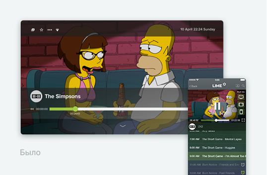
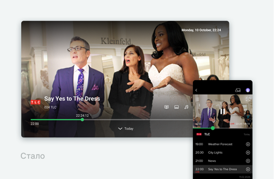
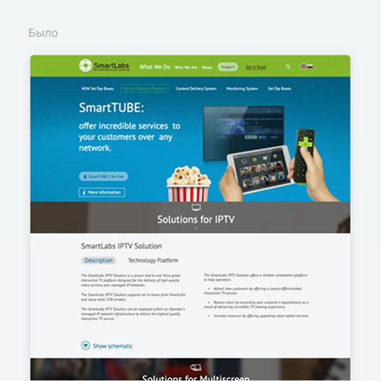
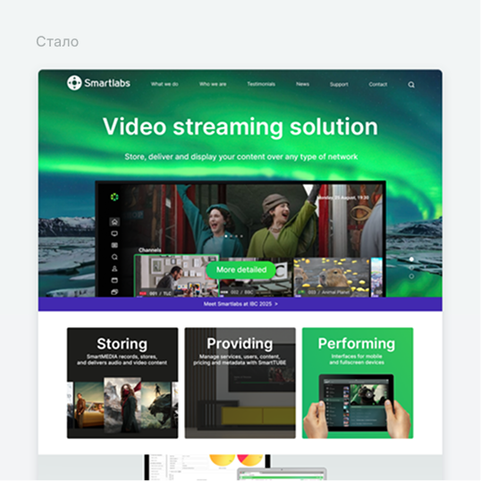
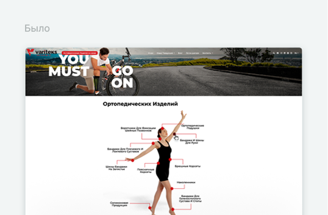
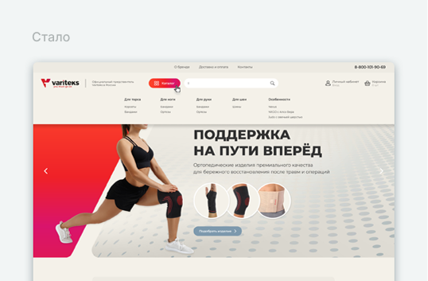

Юлия Подольная
UI/UX дизайнер и арт-директор с 12-летним опытом в создании цифровых продуктов для сложных мультиплатформенных систем. Спроектировала приложение, которым пользуются 20+ брендов и более 7 000 000 абонентов по всему миру.

LIME
ТВ-платформа для больших экранов
и мобильных устройств

Smartlabs
Сайт и промоматериалы

Variteks
Онлайн-магазин и каталоги

Organaza
Планировщик задач
LIME
Lime - платформа для просмотра фильмов, сериалов и телеканалов на больших экранах и мобильных устройствах. Приложение работает на всех популярных операционных системах - iOS, Android, Tizen, LG webOS. Его покупают операторы стримингового ТВ из разных стран для доставки контента зрителю под своим брендом. Я сделала редизайн платформы, которая теперь успешно адаптирована
под многие проекты и их цели.

Пример задачи
Дизайн плеера
Нужно было переделать дизайн плеера для просмотра разного вида контента - кино, сериалов и эфирных передач на больших и мобильных устройствах. При этом управление плеером на телевизоре осуществляется с помощью стандартного пульта. Основная цель - выстроить понятную навигацию и сократить количество действий пользователя, уместив все нужные функции плеера.


Проблема
У локального оператора пользователи привыкли переключать каналы кнопками вверх/вниз прямо во время просмотра эфирной передачи. В текущем плеере эти кнопки уже задействованы в навигации: вниз - открывает ленту программ канала, вверх - функции управления просмотром (звук, субтитры, избранное). Важно было решить этот конфликт для одного оператора, но сохранить единую систему управления для остальных наших клиентов.
Процесс
Пересобрала архитектуру плеера с учётом всех привычных паттернов. Проработала основные состояния, переходы и сценарии. Объединила их в интерактивный прототип и проверила логику навигации от начала и до конца.


Решение проблемы
Сделали отдельную подключаемую фичу для клиентов, которая меняет поведение кнопок вверх/вниз в плеере. Статичный логотип канала может становиться фокусируемой каруселью. Когда фокус на ней, кнопки вверх/вниз листают каналы. Если фокуса нет, сохраняется стандартная навигация плеера. В режиме просмотра без открытых контролов кнопки вверх/вниз сразу переключают каналы.

Результат
Освежили дизайн плеера на всех платформах и закрыли специфический сценарий локального ТВ-оператора, сохранив привычный UX его пользователей и единую логику LIME для остальных клиентов.

Упрощение кастомизации
Важным достижением бизнеса стало упрощение кастомизации приложения для новых заказчиков. Я провела анализ изменяемых элементов, определила основные
и составила из них базу образцов для наших разработчиков. Для компании-клиента был сформирован гайд с примерами и требованиями к предоставляемым файлам. Получилось упростить и автоматизировать процесс смены бренда. Рабочее время нашей команды при взаимодействии с новым клиентом сокращено с 1,5 месяцев
до 1 недели, производительность выросла в 6 раз.


В рамках проекта LIME было ещё много интересных задач - от сложных сценариев
до развития продукта на разных платформах. Приложение SmartLabs LIME Application доступно в App Store и других магазинах.
Smartlabs
Smartlabs - компания, которая создаёт программные решения и инфраструктуру для сервисов цифрового ТВ, а также производит приставки. В роли арт-директора я выстраивала целостную визуальную систему бренда - от обновления фирменного стиля и сайта до презентаций, рекламы, социальных сетей и выставочных стендов. Одновременно работала над дизайном самостоятельно и координировала работу других специалистов, обеспечивая единый визуальный язык во всех точках контакта с брендом.


Пример задачи
Сайт
Требовалось переработать сайт Smartlabs как основной инструмент презентации продуктов и решений компании. Пересобрать продуктовую структуру, сделать предложение понятным для потенциальных клиентов и выстроить более современную визуальную подачу.


Проблема
Старый сайт был построен вокруг большого количества продуктов решений, которые последовательно перечислялись на главной странице сложным техническим языком. При этом между ними не было понятной иерархии, сложная система меню и подменю затрудняла навигацию. Для b2b-компании это становилось маркетинговой проблемой. Сайт не помогал менеджерам быстро направлять клиента к нужной информации.
Процесс
На первом этапе я пересобрала продуктовую структуру сайта с точки зрения маркетинга: объединила продукты и решения в понятные группы, упростила меню и выстроила новую иерархию разделов.
Для ключевых страниц самостоятельно проработала содержание: сформулировала тексты и объяснила простым языком, что представляет собой каждый продукт, какие задачи он решает и для кого предназначен.
После этого перевела новую маркетинговую структуру в UX и UI: спроектировала навигацию, иерархию страниц и обновила визуальную систему сайта.


Результат
Продукты и решения стали представлены в виде отдельных визуальных модулей - кубиков, баннеров, cta-элементов. Такая модульная структура позволила легко менять состав и порядок блоков на главной странице и адаптировать её под сезонные задачи бизнеса. Обновлённая система сделала сайт более удобным инструментом для продаж.


Проект Smartlabs позволил мне развить применить разносторонние навыки в сфере дизайна. Я создавала иллюстрации и лендинги, верстала материалы для печати, придумывала креативные рекламные концепции, готовила технические схемы для производства. В последний год работы я плотно занималась видеопрезентациями для социальных сетей: придумывала и оформляла визуальную подачу, снимала и монтировала контент. Внутри компании я выросла из штатного графического дизайнера в креативного IT-специалиста с продуктовым мышлением.
Variteks
Variteks - турецкий производитель и продавец медицинских ортопедических изделий. Для российского дистрибьютора я разработала онлайн-магазин бренда, а также занималась сопутствующими материалами: верстала печатные каталоги, флаеры, оформляла визитки и другую полиграфию.


Пример задачи
Онлайн-магазин
Нужно было создать понятный сайт-каталог с возможностью быстро найти ортопедическое изделие и оформить заказ.


Проблема
Существующая турецкая версия сайта не давала понятной структуры каталога. Система фильтрации работала неудобно: товары и параметры существовали без четкой логики, найти подходящее изделие было сложно.
Процесс
Пересобрала структуру каталога и систему фильтрации с учётом характеристик товаров. Объединила взаимосвязанные группы и выстроила систему пересечения и объединения множеств, чтобы пользователь мог последовательно сужать или расширять выдачу. На этой основе спроектировала основные сценарии онлайн-магазина, а далее собрала целостную визуальную систему.

Результат
Получился простой и понятный онлайн-магазин с логичной структурой каталога и удобной системой фильтрации. Параллельно сформировался фирменный стиль для презентации бренда в России.


Organaza
Organaza - система управления проектами и задачами с декомпозицией заданий, планированием и визуализацией рабочих процессов. Я отвечала за UI продукта: разработала визуальный стиль и интерфейсы основных экранов системы.

Задача
Требовалось создать понятный и цельный визуальный язык для сложного рабочего инструмента. Большое количество информации и функций должны быть удобно представлены для ежедневной работы.
Процесс
Изучала аналоги и прототипы. Определила визуальное направление продукта - принципы работы интерфейса, цветовую палитру, типографику, стили элементов. На этой основе прорабатывала основные экраны и состояния системы.
Результат
Получился цельный интерфейс для сложной системы управления проектами. Объёмные данные, задачи и настройки удалось организовать в едином стиле без ощущения перегруженности.